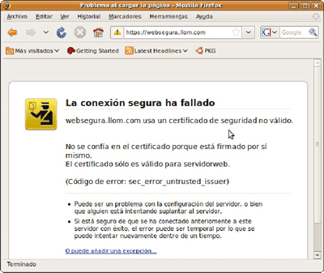
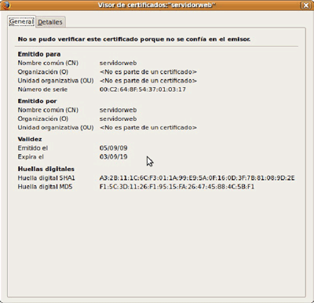
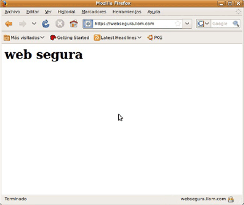
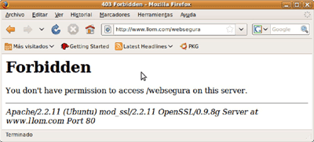

Quan instal·lem l’Apache2, també s’instal·la el mòdul SSL (secure sockets layer) per a l’Apache2; per tant, no serà necessari instal·lar cap paquet addicional. De fet, únicament, haurem de generar un certificat per al servidor i activar el mòdul SSL.
Amb la intenció que el nostre servidor pugui utilitzar el protocol de transferència d’hipertext segur, necessitarem que disposi d’un certificat. Aquest certificat permetrà que el nostre servidor utilitzi el xifrat asimètric per intercanviar les claus de xifrat per als clients abans d’arrencar una transmissió segura d’informació. Val a dir que, inicialment, el client haurà d’acceptar el certificat del servidor, atès que generarem un certificat autosignat. Si volem evitar-ho, hauríem de contractar un certificat a una entitat certificadora de confiança però que té un cost força elevat. Per tant, amb la intenció de generar el nostre certificat autosignat, escriurem i executarem la comanda corresponent.
# make-ssl-cert /usr/share/ssl-cert/ssleay.cnf\ /etc/ssl/certs/apache2.pem
Durant l’execució de la comanda make-ssl-cert, el procés d’instal·lació ens pot sol·licitar informació tan rellevant com el nom del servidor, el país, etc. A continuació, es crearà l’arxiu /etc/ssl/certs/apache.pem, que conté les claus que facilitaran que el servidor utilitzi un xifrat asimètric.
Posteriorment, haurem de configurar un servidor virtual perquè utilitzi el certificat sol·licitat.
Per crear un servidor virtual segur en Apache2, haurem de crear, en primer lloc, una carpeta anomenada websegura dins de /var/www que esdevindrà l’arrel dels documents (DocumentRoot) del nostre servidor virtual segur perquè a tot allò que col·loquem dins d’aquesta carpeta s’haurà d’accedir mitjançant el protocol de transferència d’hipertext segur. Val a dir que, considerant que aquest protocol utilitza el port 443, haurem d’habilitar aquest port perquè l’Apache l’utilitzi. En cas que el port 443 ja estigués habilitat, no hauríem de fer res.
En cas que l’haguéssim d’habilitar, haurem d’accedir a l’arxiu /etc/apache2/ports.conf i escriure la següent línia:
Listen 443
A continuació, haurem de crear el servidor virtual en el servidor web Apache. El nostre servidor virtual disposarà d’una adreça d’Internet d’accés diferent al de la nostra pàgina web principal (per exemple, websegura.llom.com) i serà accessible mitjançant el protocol de transferència d’hipertext segur, per tant, haurem d’habilitar l’SSL i indicar la ruta de l’arxiu que conté el certificat. Tot això haurem de fer-ho editant l’arxiu /etc/apache2/sites-available/default:
// Afegir en la secció final de l'arxiu /etc/apache2/sites-available/default
NameVirtualHost websegura.llom.com:443
<VirtualHost websegura.llom.com:443>
ServerName websegura.llom.com
DocumentRoot /var/www/websegura
SSLEngine On
SSLCertificateFile /etc/ssl/certs/apache2.pem
ErrorLog /var/log/apache2/error.log
CustomLog /var/log/apache2/access.log combined
</VirtualHost>
<Directory "/var/www/websegura">
Options Indexes FollowSymlinks MultiViews
AllowOverride None
Order allow, deny
Allow from all
SSLRequireSSL
</Directory>
Posteriorment, haurem d’habilitar el mòdul SSL del servidor Apache:
# a2enmod ssl
I, a continuació, haurem d’arrencar de nou el servidor Apache:
# /etc/init.d/apache2 restart
Arribats a aquest punt, ja podem provar l’accés a la pàgina web segura; ara bé, si no disposem d’un servidor de noms de domini que funcioni, haurem d’incloure dins de l’arxiu /etc/hosts una línia per resoldre localment el nom del nostre servidor per la seva adreça d’Internet IP perquè, en aquest cas, navegar amb l’adreça d’Internet no funcionarà.
// Resoldre el nom localment; per aconseguir-ho, afegirem dins de /etc/hosts
192.168.1.240 websegura.llom.com
Val a dir que per accedir a les pàgines segures del nostre servidor web, ens adreçarem al navegador web, des de la barra de navegació, per escriure http://websegura.llom.com. El primer que apareixerà serà l’alerta de seguretat que ens indica que el certificat no està emès per una AC, autoritat de certificació (en anglès CA certification authority) en la qual confiem:

Arribats a aquest punt, haurem d’adreçar-nos a l’enllaç que ens apareix en l’àrea inferior de la finestra que ens ha sorgit per, un cop dins, obtenir un certificat. De fet, si polsem sobre el botó “Veure”, podrem conèixer tant la informació relacionada amb el certificat com l’entitat certificadora que el signa.

Si acceptem el certificat, voldrà dir que, tot i que estigui signat per una entitat certificadora que és de confiança par al nostre navegador web, l’acceptem. De fet, haurem d’indicar al navegador si acceptem el certificat per a sempre, o bé, únicament, per a aquesta ocasió. En aquest cas, com que tindrem la seguretat que el certificat és bo, atès que l’hem creat nosaltres mateixos, podem acceptar-lo per a sempre.
En conseqüència, el navegador web no ens tornarà a plantejar cap altra qüestió respecte el certificat donat, ja que ja li haurem indicat manualment que confiem en aquest certificat.
Arribats a aquest punt, ja disposem d’accés a la pàgina web segura mitjançant el protocol de transferència d’hipertext segur, per tant, ja tenim garantit que la informació de la pàgina web, abans de sortir del servidor, ha estat xifrada i, alhora, la transferència de dades des del servidor al nostre navegador web s’ha produït de forma segura.
Quan les dades arriben al nostre navegador, ja s’han desxifrat. De fet, el cadenat tancat que apareix en la secció inferior dreta del navegador web indica que la transferència de dades s’ha realitzat de forma segura.

Considerant que coneixem la ruta d’accés a la carpeta segura, en cas que intentéssim accedir a la carpeta segura utilitzant el protocol de transferència d’hipertext segur mitjançant el navegador web (introduint http://www.llom.com/websegura en la barra de navegació), el servidor web Apache denegaria l’accés, atès que dins de /etc/apache2/sites-available/default s’ha especificat que la carpeta ha d’estar accessible mitjançant el protocol de transferència d’hipertext.

Un cop haguem configurat el nostre accés segur a les carpetes, pot sorgir la necessitat que els usuaris disposin d’una carpeta web segura on poder col·locar continguts accessibles mitjançant el protocol de capa de connexió segura SSL; en aquest cas, una possible solució seria crear una carpeta dins de la carpeta /var/www/websegura perquè l’usuari pugui pujar-hi continguts mitjançant el protocol de transferència d’arxius (FTP, File transfer protocol).
Paral·lelament, considerant que haguéssim creat un usuari SecureBernat amb una carpeta /var/www/websegura/bernat, l’accés als continguts des d’un navegador web seria introduint l’adreça https://websegura.llom.com/bernat en la barra de navegació.